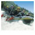
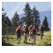

The town offers a variety of summer and winter sports including skiing, hiking, mountain biking and paragliding. Mayrhofen is situated near the Hintertux glacier, which, at 3250m above sea level, is above the snowline. Skiing is available all year round here. Mayrhofen sits between the Penken and the Ahorn mountains which provide ski runs in the winter and mountain biking, hiking and paragliding in the summer. The Ahorn offers mainly easy and intermediate runs, but also has a long, steep red run which was once on the World Cup Downhill circuit but was removed as it was deemed too dangerous.

